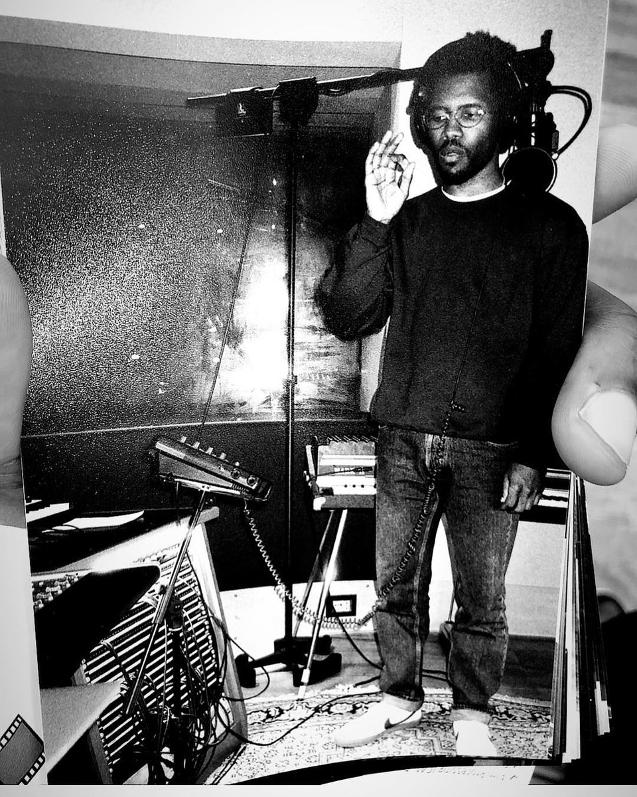

Frank Ocean, born Christopher Edwin Breaux, is a highly influential American singer, songwriter, and producer known for his distinctive blend of R&B, soul, and pop. His music is celebrated for its emotive storytelling and innovative sound, which has earned him critical acclaim and a dedicated fan base. With a reputation for artistic integrity and a penchant for privacy, Frank Ocean remains a captivating figure in the modern music landscape.
Frank Ocean's journey to stardom began in Los Angeles, where he initially worked as a songwriter for major artists like Justin Bieber and Beyoncé. His breakthrough came in 2010 when he joined the hip-hop collective Odd Future, gaining visibility and a platform to showcase his unique voice. In 2011, he released the mixtape "Nostalgia, Ultra," which quickly garnered critical acclaim and led to a recording contract with Def Jam Recordings. His debut studio album, "Channel Orange," released in 2012, was a commercial and critical success, earning him a Grammy Award and solidifying his place as a pioneering artist in contemporary music.

As of now, Frank Ocean continues to intrigue fans with his enigmatic presence and infrequent public appearances. While he has not announced any specific release dates for new music, there is ongoing anticipation for his next project. Known for taking his time to perfect his work, Frank Ocean's future releases are expected to continue pushing musical boundaries and exploring new themes, maintaining his status as a transformative figure in the industry. Fans remain eager for any hint of new material, hopeful for another groundbreaking album that reflects his evolving artistry.